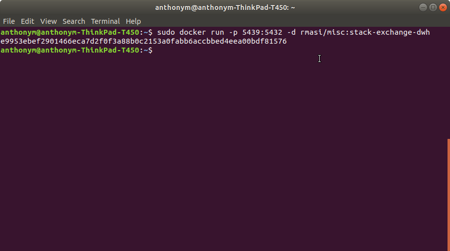
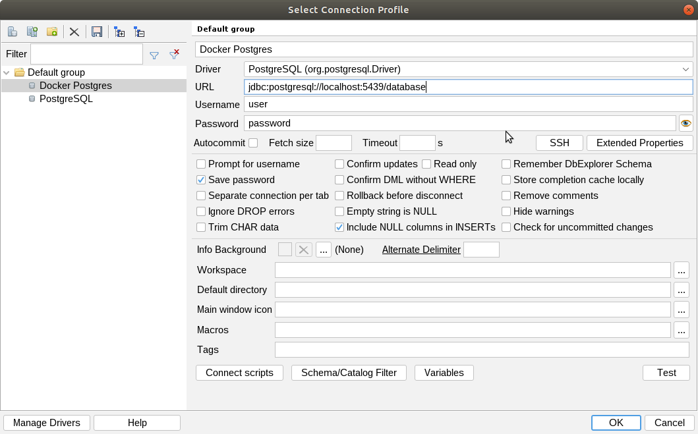
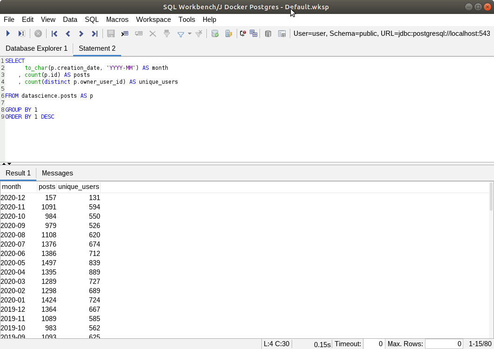

Rey Anthony Masilang
February 5, 2021
How to Spin Up a Local Data Warehouse with Real-World Data
Introduction
In this article, I’ll show you how you can easily spin up a data warehouse (Postgres) on your computer with real-world data from Data Science StackExchange.
But why?
Whether you’re an aspiring data scientist, an expert business intelligence developer, or anything else in between, you can use this to hone your SQL skills by practicing it on actual data collected by an actual company.
Plus you can even connect this data warehouse instance to BI software like Tableau or Power BI so you can both practice data visualization and build an online portfolio when you publish your work on Tableau Public or Power BI Community
Just four steps:
Hopefully you’re using MacOS or Ubuntu. If you’re on Windows, be more patient and Godspeed!
- Install Docker.
- For Windows, follow the instructions carefully, especially the System Requirements section.
- For MacOS.
- For Ubuntu.
- Run this command via Terminal (for Mac/Ubuntu) or via PowerShell (for Windows):
docker run -p 5439:5432 -d rmasi/misc:stack-exchange-dwh- 
- If you get permission errors, try
sudo docker run -p 5439:5432 -d rmasi/misc:stack-exchange-dwhinstead.
- Connect your SQL client, e.g. SQLWorkbench/J.
- Use the following parameters:
- username:
user - password:
password - hostname:
localhost - port:
5439 - JDBC URL:
jdbc:postgresql://localhost:5439/database - driver: PostgreSQL
- username:
- 
- Use the following parameters:
- Fire away!
- Explore the tables in the
datascienceschema using the Database Explorer. - 
- Explore the tables in the
What’s in this dataset?
The dataset is from Data Science StackExchange, similar to StackOverflow but focusing on data science topics. The tables contain structured data from the website’s user-generated content such as posts, tags, comments, users, votes, etc.
Unlike other free datasets online, this is a complete copy of a relational database, perfect for practicing SQL select statements, joins, aggregate functions, etc.. Most companies store their data this way and it’s a good way to simulate actual work in an actual company.
Some final words…
As of the time of writing, I have yet to analyze the data myself. But of course, having the infrastructure is always the first step in analyzing data (at least via SQL). Again, just like in the real world. Good luck and happy querying!
Check out the github project here [r-mas/stack-exchange-dwh].
**Banner photo by CHUTTERSNAP on Unsplash
comments powered by Disqus